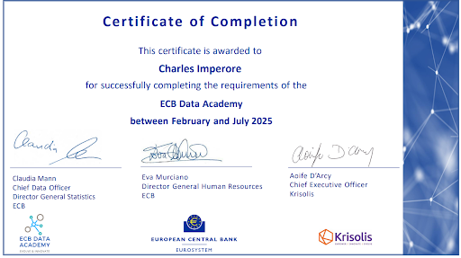

Charles IMPERORE
Aspiring Financial Professional
About me
With a rigorous academic background combining French Classe Préparatoire and university, I developed a deep curiosity and strong analytical mindset for solving complex financial problems. I am eager to apply these skills in risk management and quantitative finance roles. Having spent seventeen years abroad, ten of which in China, I am fluent in French, English, and Mandarin, and have cultivated strong adaptability and communication skills that enable me to thrive in international and multicultural environments.
HOBBIES & INTERESTS
Rugby Club Paris Rugby team, French Federal 3 National level Championship & Avid reader (2-3 books per month)

WORK EXPERIENCE
Banking Supervision Analyst, European Central Bank
DG-SIB, Banco Santander JSTFrankfurt
Sep 2024 - Aug 2025
- Designed and implemented a Securitisation Dashboard using Python for data cleaning and Tableau for data visualisation.
- Drafted 3 final decision letter for Internal Model Investigations (IMI) of the SSM and completed follow-up processes.
- Quantified market risk exposures and impacts on capital requirements, contributing to supervisory measures to mitigate risks.
Corporate Finance Analyst, Mantu
IT Services and Consulting GroupLuxembourg
Jan 2023- Jun 2023
- Produced 10 Financing, Treasury and Working Capital reports for Top Management of a €600M Revenues company.
- Modelled transition to IFRS16 accounting standards to identify impacts on financial statements.
Portfolio Management Analyst, Stanhope Capital
Investment Management Company (£30Bn AuM)Paris
Jul 2021-Jun 2022
- Created customised portfolios by analysing risk-return profiles and market conditions to achieve optimal allocation.
- Performed market research using Bloomberg and Morningstar to inform asset allocation decisions.
- Conducted 12 KYC risk assessments, ensuring alignment with regulatory requirements and identifying clients' risk tolerance levels.
INTERNATIONAL EXPERIENCE
Germany, 2024-2025Frankfurt
- Worked in a EU institution within a multicultural and international team.
- Integrated locally through participation in Eintracht Rugby Club, with German-speaking trainings and community events.
Luxembourg, 2023
- Operated in a global corporate environment at Mantu with cross-border financial projects.
- Strengthened adaptability and collaboration in one of Europe’s most international business hubs.
China, 2005-2015Beijing, Shanghai
- Learned Mandarin Chinese (HSK5 level) in a bilingual section with participation in intercultural exchange programs.
- Developed a strong capacity for adaptation and a detailed understanding of Asian cultural codes.
Netherlands, 2000-2005Amsterdam
- Strengthened social and linguistic skills in an English-speaking environment.
- Successfully integrated into a European multicultural framework.
Education
Master in research in Finance, Université Paris Dauphine PSL
Relevant Coursework: Asset Pricing, Term Structures, Stochastic Calculus, Times Series, Derivatives, Econometrics, Python, Machine Learning.
Master in management, EM Lyon Business School
Relevant Coursework: Corporate Finance, Portfolio Management, Green Finance, Management of Organizations, Quantitative Marketing, Business Law.
Classe Préparatoire ECS, Collège Stanislas
Relevant Coursework: Mathematics, Geopolitics, Literature, English, Chinese.
VOLUNTEERING
Finance Team Lead
- Head of the finance team of the umbrella organization of an international federation of 200 associations.
- Provided 12 financial analysis, reporting, and strategy recommendations to support impact goals.
Secretary & Treasurer
- Managed a €45k budget enabling free instrument courses for 100+ children across 5 cities.
- Led financial operations & fundraising, saving €5k in equipment through donation campaigns.
PROGRAMMING PROJECTS
ECB-Krisolis Data Academy Project – German Credit Default Prediction
- Built and tuned a Random Forest model (GridSearchCV) to 78% prediction accuracy.
- Applied oversampling and IQR-based outlier management.
Skills
Languages:
French Native, English Fluent (IGCSE), Mandarin Fluent (HSK4), Spanish Intermediate (DELE B1)
Technical
Excel, VBA, Python, R, SQL, Power BI, Tableau, LaTeX, Zotero and Agora
Soft skills
adaptability and pragmatism, team spirit, communication and empathy, synthesis capability and project management
Reference
Harald Heide, Head of Section & JST Coordinator, DG-SIB, ECB (harald.heide@ecb.europa.eu) [Recommendation Letter on demand]